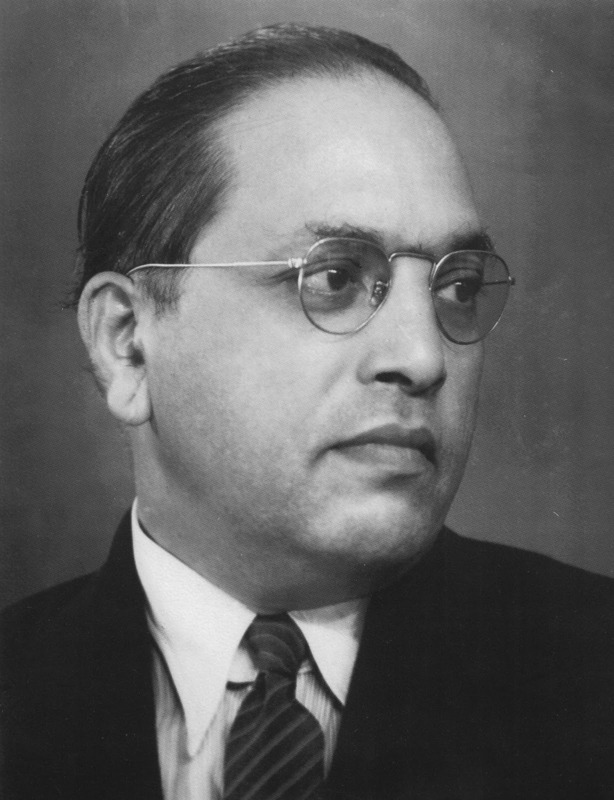

Dr.B.R.Ambedkar
The Father of Indian Constitution

Here's a timeline of Dr.B.R.Ambedkar's life:
- 1891 - born into a Mahar (dalit) caste, who were treated as untouchables,in Ratnagiri district of modern-day Maharashtra.
- 1897 - became the only untouchable enrolled at Elphinstone High School
- 1906 - married a nine-year-old girl, Ramabai as per the customs prevailing at that time
- 1907 - he passed his matriculation examination from Elphinstone High School.
- 1908 - entered Elphinstone College, which was affiliated to the University of Bombay,
- 1912 - obtained his degree in economics and political science from Bombay University
- 1913 - awarded a Baroda State Scholarship of £11.50 (Sterling) per month for three years under a scheme established by Sayajirao Gaekwad III (Gaekwad of Baroda) that was designed to provide opportunities for postgraduate education at Columbia University in New York City.
- 1915 - passed his M.A.exam,majoring in Economics, and other subjects of Sociology, History, Philosophy and Anthropology.
- 1916 - completed his second thesis,National Dividend of India – A Historic and Analytical Study, for another M.A
- 1917 - enrolled for the Bar course at Gray's Inn
- 1920 - began the publication of the weekly Mooknayak (Leader of the Silent) in Mumbai
- 1923 - completed a D.Sc.in Economics which was awarded from University of London, and the same year he was called to the Bar by Gray's Inn
- 1925 - appointed to the Bombay Presidency Committee to work with the all-European Simon Commission
- 1927 - decided to launch active movements against untouchability
- 1930 - launched the Kalaram Temple movement
- 1935 - appointed as principal of the Government Law College, Bombay
- 1936 - founded the Independent Labour Party
- 1937 - contested the Bombay election to the Central Legislative Assembly for the 13 reserved and 4 general seats, and secured 11 and 3 seats respectively.
- 1947 - appointed as the Chairman of the Constitution Drafting Committee, and was appointed by the Assembly to write India's new Constitution.
- 1936 - married Dr. Sharada Kabir after the death of Ramabai
- 1951 - established the Finance Commission of India.
- 1955 - he founded the Bharatiya Bauddha Mahasabha, or the Buddhist Society of India.
- 1951 - established the Finance Commission of India.
- 1956 - died in his sleep on December 6 at his home in Delhi.
“Cultivation of mind should be the ultimate aim of human existence”.
- Dr Bhim Rao Ambedkar